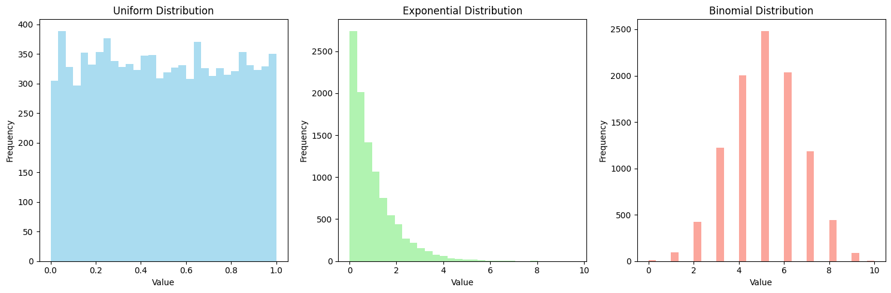
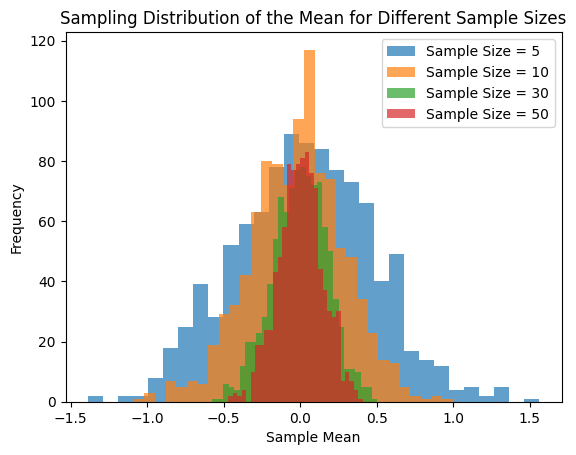
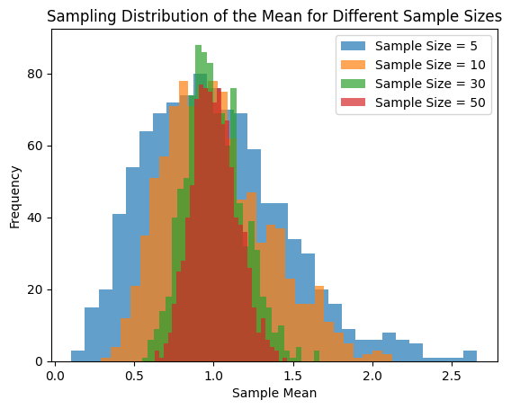
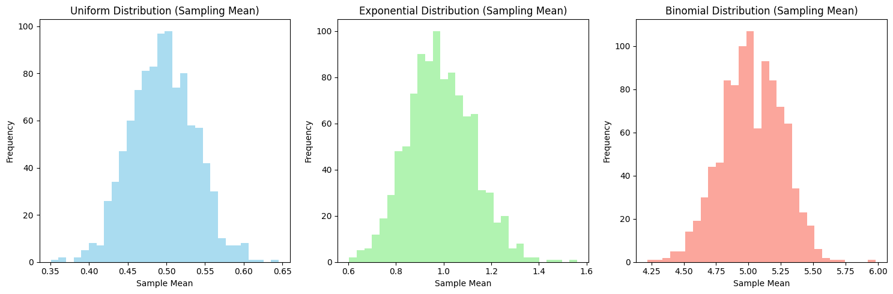

Problem 1
Task 1: Simulating Sampling Distributions
Population Distributions
Select several types of population distributions, such as:
- Uniform distribution
- Exponential distribution
- Binomial distribution
For each distribution, generate a large dataset representing the population.
Formulas:
-
Uniform Distribution:
The uniform distribution has the following probability density function (PDF):
$$ f(x) = \frac{1}{b - a}, \quad a \leq x \leq b $$
where \(a\) and \(b\) are the minimum and maximum values of the distribution, respectively. -
Exponential Distribution:
The exponential distribution has the following PDF:
$$ f(x) = \lambda e^{-\lambda x}, \quad x \geq 0 $$
where \(\lambda\) is the rate parameter, which is the inverse of the mean. -
Binomial Distribution:
The binomial distribution has the following probability mass function (PMF):
$$ P(X = k) = \binom{n}{k} p^k (1-p)^{n-k} $$
where \(n\) is the number of trials, \(k\) is the number of successes, and \(p\) is the probability of success in a single trial.

Task 2: Sampling and Visualization
Sampling Data
Randomly sample data from the population and calculate the sample mean for different sample sizes, such as 5, 10, 30, and 50.
- Sample Mean: The sample mean is given by the formula:
$$ \bar{x} = \frac{1}{n} \sum_{i=1}^{n} x_i $$
where \(\bar{x}\) is the sample mean, \(n\) is the sample size, and \(x_i\) are the individual sample points.
Repeat the process multiple times (e.g., 1000 iterations) to create a sampling distribution of the sample mean.
Visualization
- Plot histograms of the sample means for each sample size (5, 10, 30, 50).
- Observe how the histograms converge to a normal distribution as the sample size increases, illustrating the Central Limit Theorem (CLT). 
Task 3: Parameter Exploration
Investigating the Effect of Population Distribution and Sample Size
Explore how the shape of the original population distribution and the sample size influence the rate of convergence to normality.
Key Considerations:
- Population Distribution: Investigate how different population distributions (Uniform, Exponential, Binomial) affect the convergence to normality in the sampling distribution.
- Sample Size: Observe how increasing the sample size impacts the sampling distribution of the sample mean. Larger sample sizes generally lead to a faster convergence to a normal distribution, according to the Central Limit Theorem (CLT).
Formula for Variance of the Sampling Distribution:
The variance of the sample mean is given by:
$$ \sigma_{\bar{x}}^2 = \frac{\sigma^2}{n} $$
where \(\sigma_{\bar{x}}^2\) is the variance of the sample mean, \(\sigma^2\) is the variance of the original population, and \(n\) is the sample size.
Impact of Population Variance:
- Population Variance (\(\sigma^2\)): The spread of the sampling distribution is affected by the population's variance. A larger population variance results in a wider sampling distribution.
- Sampling Distribution Variance: As the sample size increases, the variance of the sampling distribution decreases (this is due to the \(\frac{\sigma^2}{n}\) relationship).
Visualization:
- Step 1: Generate histograms for different sample sizes (e.g., 5, 10, 30, 50) for each population distribution.
- Step 2: For each sample size, repeat the sampling process 1000 times to build the sampling distribution of the sample mean.
- Step 3: Plot the histograms to observe the convergence to normality.
- Step 4: Compare how the population's variance affects the spread of the sampling distribution.
- Step 5: Use Python libraries such as Matplotlib to generate the histograms for each scenario.

Task 4: Practical Applications
Formula:
The Central Limit Theorem (CLT) tells us that the sampling distribution of the sample mean will approximate a normal distribution as the sample size increases, even if the population distribution is not normal.
The formula for the sampling distribution of the sample mean is:
Where: - \(\mu_{\bar{x}}\) is the mean of the sampling distribution of the sample mean, which equals the population mean \(\mu\). - \(\sigma_{\bar{x}}\) is the standard deviation of the sampling distribution of the sample mean, which is the population standard deviation \(\sigma\) divided by the square root of the sample size \(n\).
